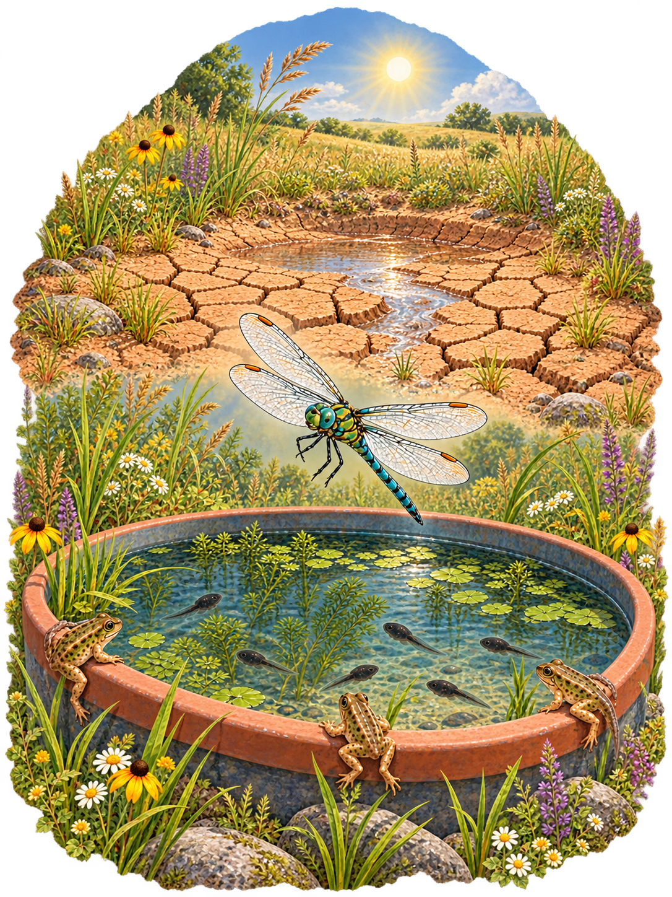
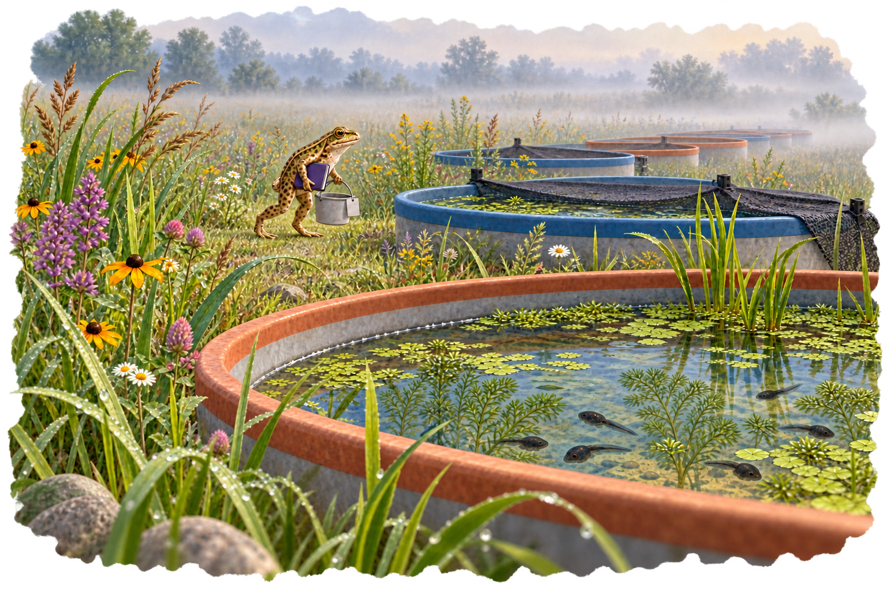
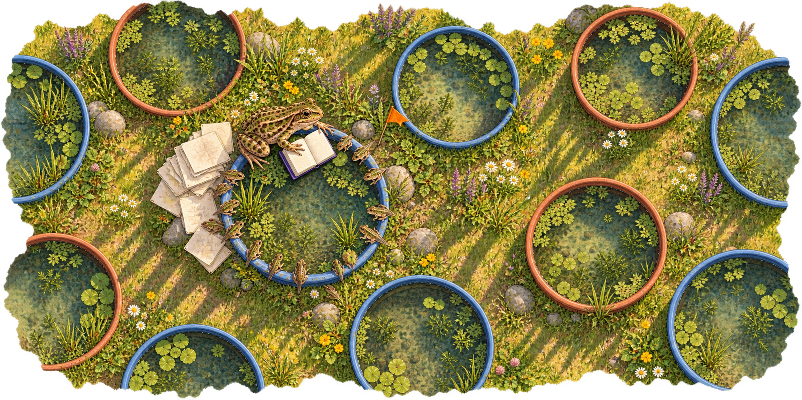
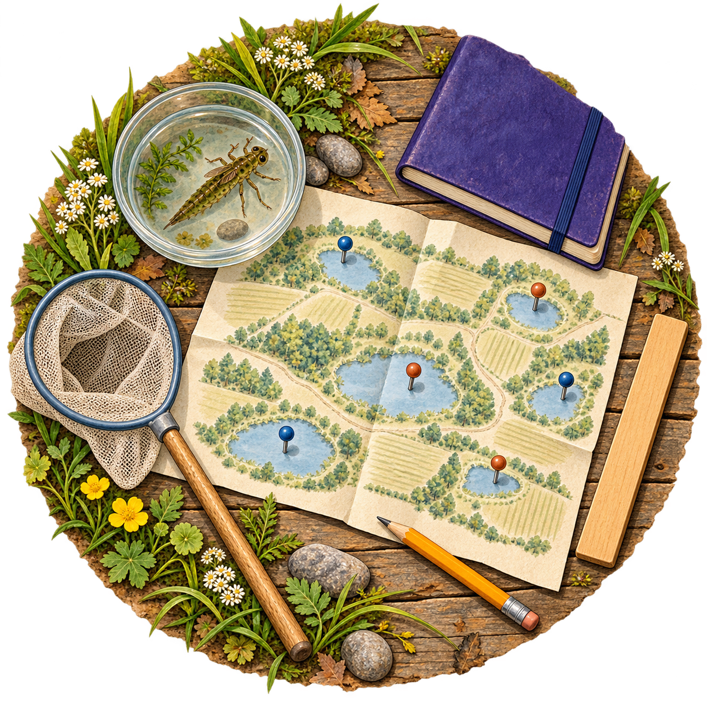
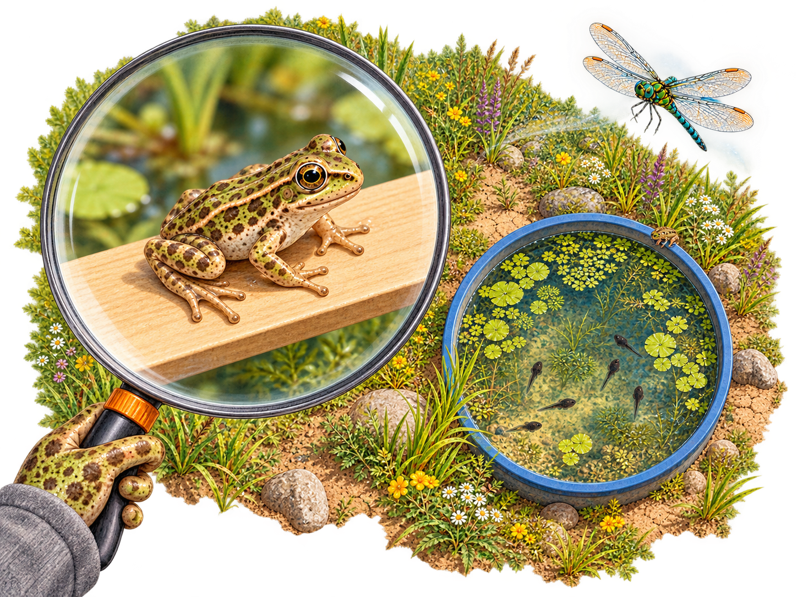
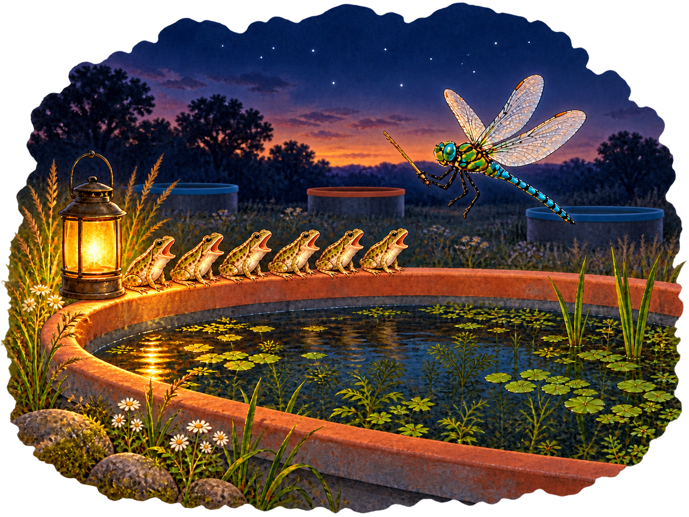
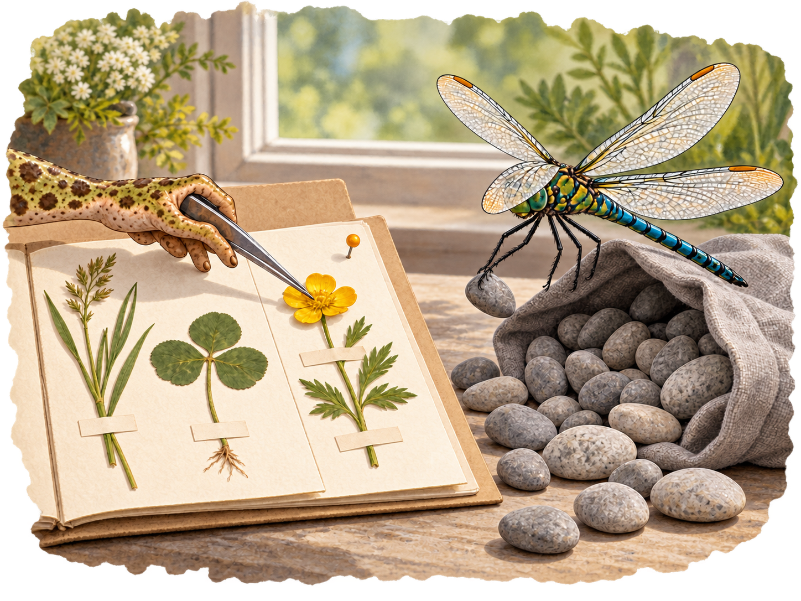

T
zabky_titulni.png

Compare current image

Seven generated candidates, 23 October 2026. The current images and deck are unchanged. Installation and replacement of slide alt texts await author review, as required by the image plan.
Click a candidate to view its original PNG; expand the comparison to see the current image. Exact prompts and provenance · All candidates and retained scenes
zabky_titulni.png

zabky_pokusne_nadrze.png


zabky_jedna_nadrz_mnoho_zabek.png


zabky_planovani_studie.png


zabky_jednotka_replikace.png


zabky_sbor_jedne_nadrze.png


zabky_pevny_nahodny.png

